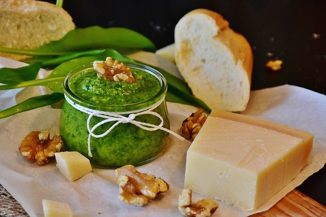

Home
Sage Pesto

Description
This is a great recipe for a healthy, healing herb paste.
Sage dominates the flavor of this pungent, strong pesto.
You can use less sage if you find it overpowering.
Of course, if you have fresh wild herbs such as dandelion greens,
chickweed, and plantain, add those as well for their healing nutrients.
Ingredients
- 1/2 cup fresh cilantro leaves
- 1/2 cup fresh parsley leaves
- 1/4-1/2 cup fresh sage leaves
- 2-3 cloves garlic
- 3/4-1 cup olive oil
- 1/4-1/2 cup sunflower seeds (or walnuts, pine nuts, etc)
- 1/4 cup freshly grated parmesan, pecorino, or romano cheese (optional)
- freshly ground black pepper and salt or dulse flakes
Steps
- Combine the herbs, garlic, and olive oil in a blender or
food processor and pulse until creamy.
- Mix in the cunslower seeds, cheese (if using), and salt and
pepper to taste.